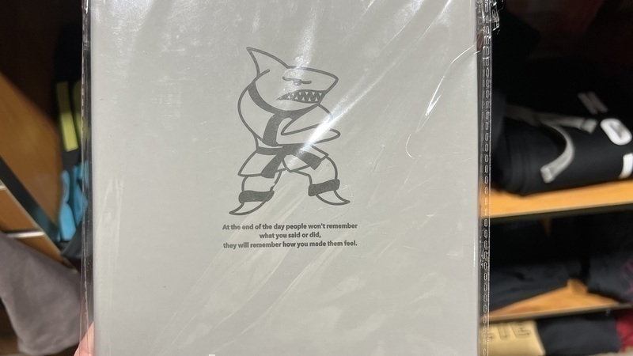
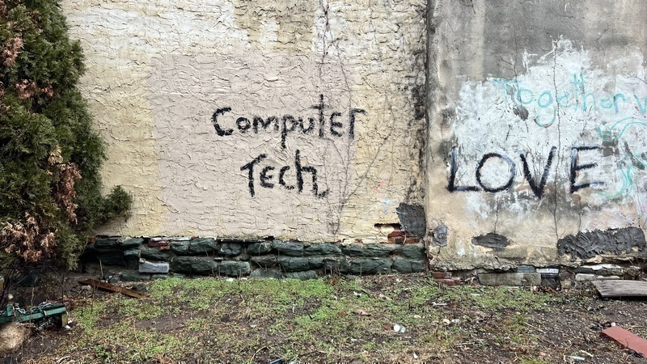

log


at the end of the day people won't remember / what you said or did, / they will remember how you made them feel.

together love

highly recommend staring at static and listening to noise for long periods of time as a form of divination. I've created a couple little scripts to facilitate this practice; please feel free to grab them from my GitHub if you're so inclined.


detail from settle, a multimedia collaboration with Alexandra Wood. You can see the installation at Philadelphia Small Works for the next two weeks.
thanks to everyone who came out for the opening of settle. What an absolute delight. In case you missed it, the installation will be up at Philadelphia Small Works for the next two weeks.

blurry process pic of me soldering a transducer for settle, a multimedia installation created in collaboration with Alexandra Wood at Philadelphia Small Works Gallery, opening tonight at 6pm. Thanks to Souha Yan for helping me source these transducers. Thanks to dani derks for helping me figure out the wiring. Thanks, also, to Zack Scholl, whose blog post on multichannel audio in supercollider on linux was very helpful, to Robbie Lyman for some last-minute code review, and to Ezra Buchla for writing a lovely piano sound in supercollider that I modified very slightly and repurposed for this piece.

process pic from settle, a multimedia installation created in collaboration with Alexandra Wood at Philadelphia Small Works Gallery, opening February 8th at 6pm
williamthazard [at] pm.me